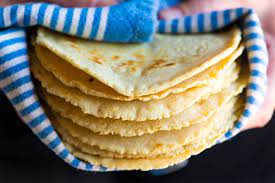

Homemade Corn Tortillas

Description
Corn tortillas are a delicious and necessary part of any taco, but those that are homemade are irreplaceable.
The distint taste and texture are only possible using the following method.
Ingredients
- 3 cups masa harina
- 3 cups hot water
- 1 tsp fine sea salt
Steps
- Mix the dough and water
- Rest the dough for 10min
- Portion the dough into 2tbsp balls
- Press the dough balls into 5 inch tortillas
- Cook the tortillas for 45 seconds per side until golden brown